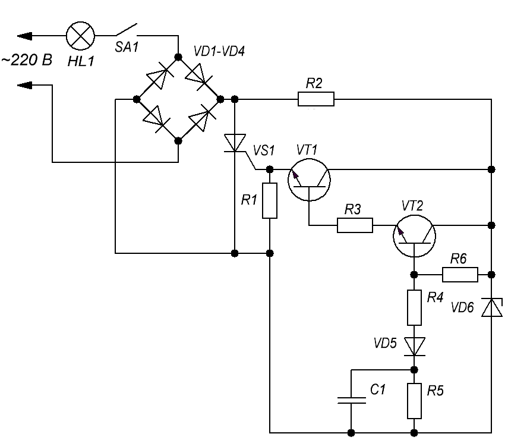

Плавное включение лампы накаливания
Данное устройство предназначено для плавного включения лампы накаливания мощностью до 100 Вт. Его можно встроить в выключатель или светильник и подключить без дополнительной проводки. При большей мощности лампы выпрямительные диоды VD1–VD4 необходимо заменить на более мощные, а тиристор VS1 поставить на радиатор.

Таблица 1
| Обозначение | Наименование | Номинал | Примечание |
|---|---|---|---|
| С1 | Конденсатор | 2 мкФ | |
| HL1 | Лампа накливания | 100 Вт / 220 В | 25-100 Вт |
| R1 | Резистор постоянный | 1 кОм / 0,25 Вт | |
| R2 | Резистор постоянный | 10 кОм / 2 Вт | |
| R3 | Резистор постоянный | 10 кОм / 0,25 Вт | |
| R4 | Резистор постоянный | 100 кОм / 0,25 Вт | |
| R5 | Резистор постоянный | 2,7 МОм / 0,25 Вт | |
| R6 | Резистор постоянный | 160 кОм / 0,25 Вт | |
| T1 | Трансформатор | ||
| VD1-VD4 | Диод выпрямительный | КД105Б | |
| VD5 | Диод выпрямительный | Д220 | |
| VT1, VT2 | Транзистор биполярный | КТ315Б | |
| VS1 | Тринистор | КУ201К |
Время выхода лампы на рабочий режим может регулироваться подбором конденсатора С1, при указанных на схеме номиналах лампа «разгорается» за 1 сек. По замыкании выключателя SA1 конденсатор С1 начинает заряжаться и открывать узел регулировки, собранный на транзисторах VT1, VT2 и тринисторе VS1. После зарядки конденсатора диодный мост оказывается закорочен тиристором и на лампу подается полное сетевое напряжение. Резистор R5 служит для разряда конденсатора С1 после выключения лампы. На месте VT1 и VT2 могут работать любые кремниевые маломощные транзисторы n-p-n с коэффициентом передачи тока не менее 50. Питание транзисторный ключ получает от простейшего стабилизатора, собранного на R2, VD6.
При налаживании устройства следует соблюдать осторожность,
поскольку все узлы прибора находятся под сетевым напряжением!